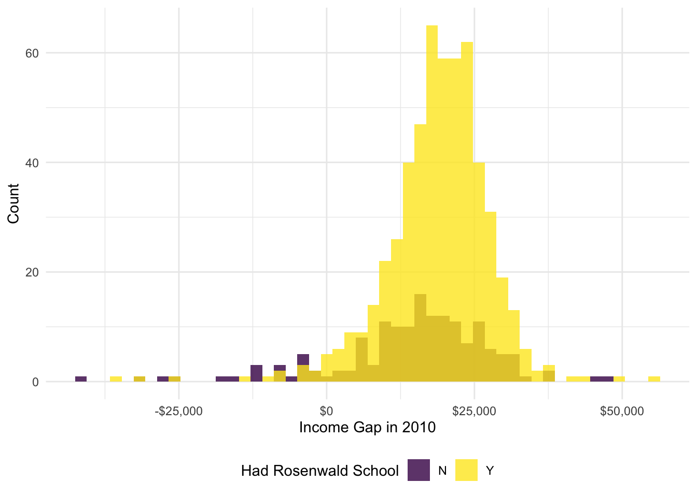
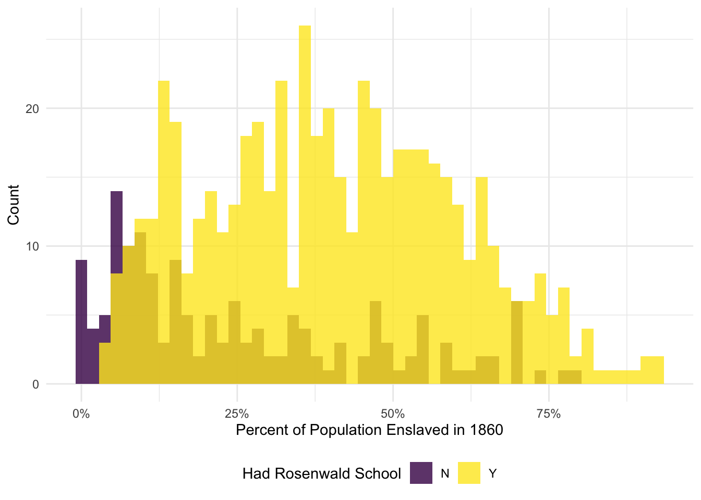
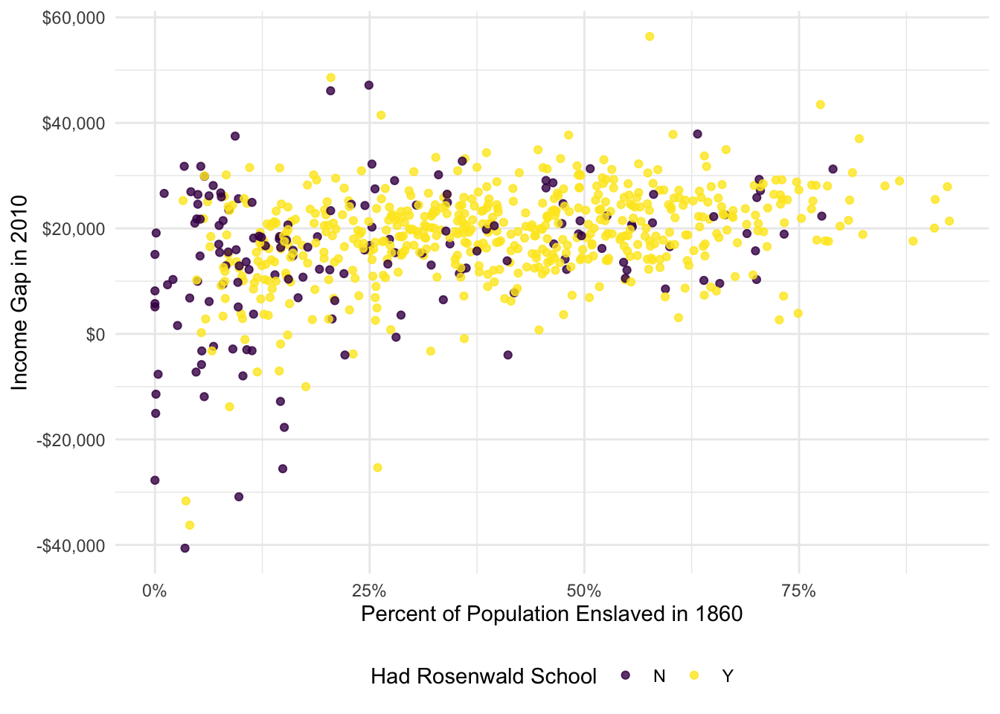

# Black income, 2010ggplot(data = ps_dt,aes(x = income_white_2010 - income_black_2010, fill =as.factor(had_rosenwald_school))) +geom_histogram(alpha =0.8, color =NA, position ='identity', bins =50) +scale_fill_viridis_d('Had Rosenwald School', labels =c('N', 'Y')) +scale_x_continuous('Income Gap in 2010', labels = dollar) +scale_y_continuous('Count', labels = comma) +theme_minimal() +theme(legend.position ='bottom')

# Black income, 2010ggplot(data = ps_dt,aes(x = pct_pop_enslaved_1860/100, fill =as.factor(had_rosenwald_school))) +geom_histogram(alpha =0.8, color =NA, position ='identity', bins =50) +scale_fill_viridis_d('Had Rosenwald School', labels =c('N', 'Y')) +scale_x_continuous('Percent of Population Enslaved in 1860', labels = percent) +scale_y_continuous('Count', labels = comma) +theme_minimal() +theme(legend.position ='bottom')

# Black income, 2010ggplot(data = ps_dt,aes(x = pct_pop_enslaved_1860/100, y = income_white_2010 - income_black_2010, color =as.factor(had_rosenwald_school))) +geom_point(alpha =0.8) +scale_color_viridis_d('Had Rosenwald School', labels =c('N', 'Y')) +scale_x_continuous('Percent of Population Enslaved in 1860', labels = percent) +scale_y_continuous('Income Gap in 2010', labels = dollar) +theme_minimal() +theme(legend.position ='bottom')

03 Regressing the income gap on the indicator for Rosenwald school, we are assuming that schools’ locations are as good as random (in their distribution across counties). In other words, we need anything that affects the gap—other than the schools—to be independent of whether counties had Rosenwald schools.
04 Estimates below. Our CIA updates to within state placement of schools needs to be as good as random (conditional on state, all non-Rosenwald school determinants of the income gap are independent of whether or not a county had a Rosenwald school).
06 Comparison below. Yes, the movement in the point estimate for the effect of Rosenwald schools seems to match what we would expect. One would like expect that places with more histories of more intense slavery would have larger income gaps today and would also have been more likely to receive a Rosenwald school. When we control for the county’s history of slavery (and total population in 1860), we see the coefficient on the Rosenwald school indicator decrease.
07 Open answer: Just want to see a DAG that makes the point that we have likely not controlled for everything.
08 I’d be concerned that there could be a bad-controls issue here: if the schools affected current (or 2010) population levels, then we should not control for it. If we don’t think schools affected current population, then we are probably fine (depending on the DAG you have in mind).
09 Estimate the propensity scores…
# Estimate propensity scores as function of 1860 attributespscore_reg =feglm( had_rosenwald_school ~#pct_pop_enslaved_1860 + pop_total_1860,I(pct_pop_enslaved_1860^2) +I(pop_total_1860^2) + pct_pop_enslaved_1860 * pop_total_1860,data = ps_dt,family ='logit')# Add propensity scores to the datasetps_dt[, p_score :=predict(pscore_reg, newdata = ps_dt)]
10 Estimates below. The estimated effect of Rosenwald schools is smaller in magnitude and no longer significantly different from zero (still positive).
# Estimate the 1860-controls regression, controlling for the propensity scorereg10 =feols( income_white_2010 - income_black_2010 ~ had_rosenwald_school + pct_pop_enslaved_1860 + pop_total_1860 + p_score | state,data = ps_dt)etable("OLS"= reg05, "Prop. Scores"= reg10)
Approximately 93.9% of the observations comply with our enforced overlap.
13 We need to be able to compare individuals with equal likelihoods of treatment. Without overlap, there is no counterfactual for some observations—and we cannot enforce the CIA.
14 Enforcing overlap here doesn’t actually change much…
# Estimate the average treatment effectblock_dt[, weighted.mean(x = est, w = n)]
[1] 1039.899
17 The proposed instrument is likely invalid: While it is probably relevant (Rosenwald schools correlates with the county’s level of 1860 enslavement), it is likely not exogenous. There are likely other factors caused by (or related to) slavery that affect the income gap (other than Rosenwald school construction), which violates the exclusion restriction. Further, there may even be a concern about monotonicity if history of enslavement increased some counties’ likelihood of getting a school and decreased other counties.